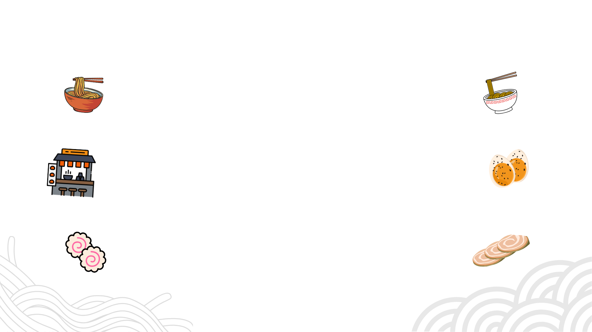
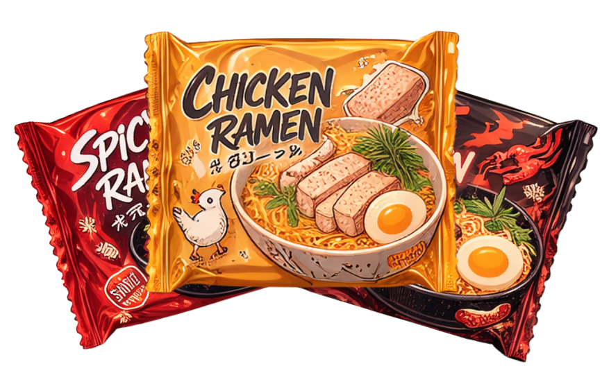
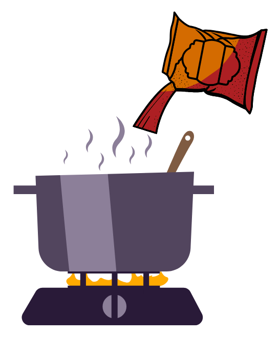
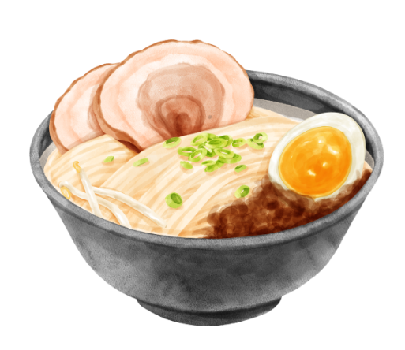

Anda Belum Memesan
Kaldu Asli 12 Jam
Kami merebus tulang sapi dan ayam selama 12 jam tanpa penyedap buatan untuk cita rasa yang dalam dan otentik.

いらっしゃいませ
Selamat menikmati ramen kami yang sehat dan berkualitas tinggi
Bukan sekadar ramen biasa. Kami masak dengan hati.
Kami merebus tulang sapi dan ayam selama 12 jam tanpa penyedap buatan untuk cita rasa yang dalam dan otentik.
Sayuran dan protein dipilih langsung dari pasar lokal setiap pagi. Kesegaran bukan pilihan, itu standar kami.
Hemat waktu tanpa korbankan rasa. Buka, seduh, dan nikmati — sempurna untuk kamu yang sibuk tapi tetap mau makan sehat.
Dari Sabang sampai Merauke, ramen kami sudah menemani sarapan dan makan malam ribuan keluarga Indonesia.
作り方
Tidak perlu jago masak. Cukup tiga langkah dan ramen sehat sudah siap di mejamu.

Keluarkan ramen dari kemasan, pisahkan mie dan bumbunya. Siapkan juga topping favoritmu seperti telur, sayuran, atau daging sesuai selera.
Tuangkan air sebanyak 400ml ke dalam panci lalu nyalakan kompor dengan api sedang. Tunggu hingga air benar-benar mendidih sebelum memasukkan mie.

Setelah air mendidih, masukkan mie dan rebus selama 3-4 menit hingga mie matang sempurna. Lalu masukkan bumbu dan aduk rata hingga semua tercampur.

Angkat dan tuangkan ramen ke dalam mangkuk saji. Tambahkan topping pilihanmu di atasnya, dan ramen sehat siap dinikmati selagi hangat bersama keluarga!
お客様の声
"Ramennya enak banget! Kuahnya kaya rasa, mie-nya kenyal. Sudah langganan setiap minggu."
"Gak nyangka ramen instan bisa seenak ini. Berasa makan di restoran Jepang beneran. Highly recommended!"
"Cocok buat anak kos! Harganya terjangkau tapi rasanya premium. Miso spicy-nya juara!"